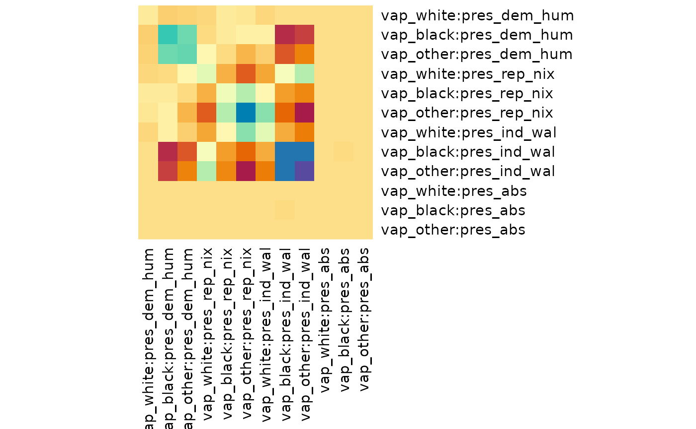
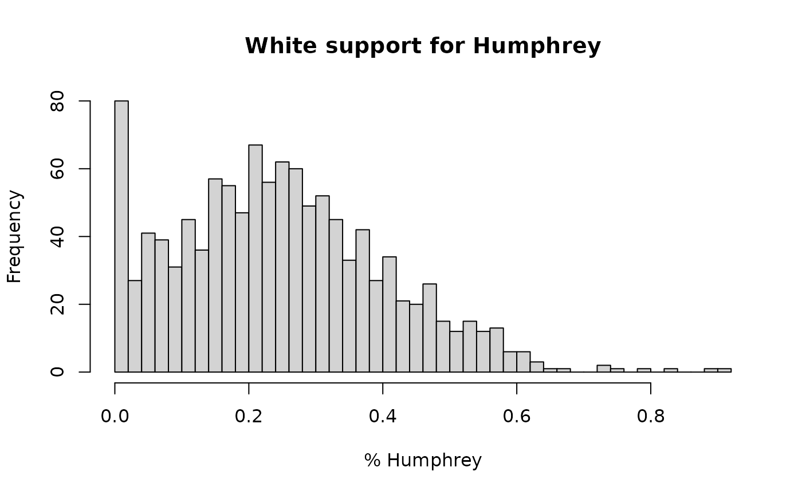

The main estimation routine in seine,
ei_est(), produces global estimates, \(\mathbb{E}[Y\mid X]\) for the entire
population under study. Sometimes, however, estimates for each
individual aggregation unit (such as precincts, counties, or other
geographies) are of interest. seine provides two
approaches for this. ei_bounds() computes guaranteed-valid
partial identification (Duncan-Davis) bounds for each unit, relying only
on the accounting identity and known limits on the outcome.
ei_est_local() produces point estimates and confidence
intervals under the same coarsening at random (CAR) assumption that
ei_est() relies on, plus (for now) an additional
homoskedasticity assumption.
Setting up the analysis
We begin by loading the 1968 election data, and defining an
ei_spec object that records the outcome, predictor,
covariate, and total-count columns, following the setup from
vignette("seine"). We now want to estimate the
individual-level association between race and presidential vote choice
within each county.
For the bounds, only the data are needed. For
ei_est_local(), we also need a fitted regression model, so
we set up an ei_spec object and call
ei_ridge().
spec = ei_spec(
elec_1968,
predictors = vap_white:vap_other,
outcome = pres_dem_hum:pres_abs,
total = pres_total,
covariates = c(state, pop_city:pop_rural, farm:educ_coll, inc_00_03k:inc_25_99k),
preproc = function(x) {
x = model.matrix(~ 0 + ., x) # convert factors to dummies
bases::b_bart(x, trees = 200)
}
)
m = ei_ridge(spec)See the main vignette (vignette("seine")) for a full
walkthrough of the estimation workflow.
Partial identification bounds
The simplest local quantities to compute are partial identification bounds: for each county and each predictor-outcome combination, the range of values for the local estimand \(\beta_{gj} = \Pr(Y = j \mid X = x_g, G = g)\) that is consistent with the observed aggregate data. These bounds require no modeling assumptions beyond the accounting identity and the specified bounds on the outcome.
ei_bounds() takes an ei_spec object (or a
formula) and returns a data frame with one row per unit per
predictor-outcome combination. The bounds argument
specifies the known limits on the outcome, which are typically [0, 1]
for proportions. Without known bounds on the outcome or other
statistical assumptions, the local estimates are completely
unidentified.
bounds = ei_bounds(spec, bounds = c(0, 1))
head(bounds)
#> # A tibble: 6 × 6
#> .row predictor outcome weight min max
#> <int> <chr> <chr> <dbl> <dbl> <dbl>
#> 1 1 vap_white pres_dem_hum 5877. 0 0.262
#> 2 2 vap_white pres_dem_hum 16131. 0 0.122
#> 3 3 vap_white pres_dem_hum 4872. 0 0.397
#> 4 4 vap_white pres_dem_hum 3566. 0 0.180
#> 5 5 vap_white pres_dem_hum 8801. 0.0190 0.0382
#> 6 6 vap_white pres_dem_hum 1698. 0 1The min and max columns give the sharp
bounds for each unit. The weight column contains the number
of observations in that unit and predictor group. This column can be
used to aggregate estimates across units.
Since aggregating bounds is a common operation,
ei_bounds() provides the global = TRUE
argument to automatically compute the global bounds by taking a weighted
average of the local bounds.
ei_bounds(spec, bounds = c(0, 1), global = TRUE)
#> # A tibble: 12 × 4
#> predictor outcome min max
#> <chr> <chr> <dbl> <dbl>
#> 1 vap_white pres_dem_hum 0.176 0.375
#> 2 vap_black pres_dem_hum 0.00467 0.927
#> 3 vap_other pres_dem_hum 0 1
#> 4 vap_white pres_rep_nix 0.247 0.421
#> 5 vap_black pres_rep_nix 0 0.808
#> 6 vap_other pres_rep_nix 0 0.991
#> 7 vap_white pres_ind_wal 0.213 0.415
#> 8 vap_black pres_ind_wal 0.00874 0.946
#> 9 vap_other pres_ind_wal 0 1.000
#> 10 vap_white pres_abs 0.0000108 0.00179
#> 11 vap_black pres_abs 0 0.00844
#> 12 vap_other pres_abs 0 0.0910As is common with partial identification, the bounds can be quite wide. For example, without further assumptions, nothing can be said about the Black preference for Wallace except that it is between 0.8% and 94.6%.
The as.array() method reformats the output as a
four-dimensional array with dimensions units by predictors by outcomes
by (min, max), which may be convenient for further analysis.
Bounds on contrasts, such as the difference in vote share between
White and Black voters, can be computed directly by passing a
contrast argument. Computing these bounds is more involved
and requires solving a linear program for each unit, but the output is
the same format as above. Here, we calculate bounds on White-Black
racially polarized voting for each candidate.
ei_bounds(spec, bounds = c(0, 1), contrast = list(predictor = c(1, -1, 0)))
#> # A tibble: 4,572 × 5
#> .row predictor outcome min max
#> <int> <chr> <chr> <dbl> <dbl>
#> 1 1 vap_white - vap_black pres_dem_hum -0.841 0.262
#> 2 2 vap_white - vap_black pres_dem_hum -0.761 0.122
#> 3 3 vap_white - vap_black pres_dem_hum -0.623 0.397
#> 4 4 vap_white - vap_black pres_dem_hum -0.654 0.180
#> 5 5 vap_white - vap_black pres_dem_hum -0.981 0.0382
#> 6 6 vap_white - vap_black pres_dem_hum -0.742 0.901
#> 7 7 vap_white - vap_black pres_dem_hum -0.531 0.250
#> 8 8 vap_white - vap_black pres_dem_hum -0.993 0.183
#> 9 9 vap_white - vap_black pres_dem_hum -0.474 0.178
#> 10 10 vap_white - vap_black pres_dem_hum -0.991 0.0855
#> # ℹ 4,562 more rowsNote that because contrasts across predictor groups involve fundamentally different numbers of people in each unit, these bounds cannot be aggregated across units in a meaningful way. For a bound on the global contrast, you can aggregate non-contrasted bounds and then take the contrast of the global bounds.
Estimating the local covariance
Point estimates and confidence intervals from
ei_est_local() require a model for how the local estimands
vary around their conditional mean within each unit. This variation is
captured by the b_cov argument, a covariance matrix for the
local estimands \(\beta_{gj}\) around
the regression prediction.
ei_local_cov() estimates this covariance from the data,
under the CAR assumption and an additional homoskedasticity condition. A
small amount of shrinkage is applied, controlled by the
prior_obs argument. Details are provided in McCartan &
Kuriwaki (2025+).
b_cov = ei_local_cov(m, spec)
round(sqrt(diag(b_cov)), 3)
#> vap_white:pres_dem_hum vap_black:pres_dem_hum vap_other:pres_dem_hum
#> 0.078 0.264 0.245
#> vap_white:pres_rep_nix vap_black:pres_rep_nix vap_other:pres_rep_nix
#> 0.175 0.159 0.323
#> vap_white:pres_ind_wal vap_black:pres_ind_wal vap_other:pres_ind_wal
#> 0.173 0.329 0.353
#> vap_white:pres_abs vap_black:pres_abs vap_other:pres_abs
#> 0.008 0.004 0.017
round(b_cov[1:3, 1:3], 3)
#> vap_white:pres_dem_hum vap_black:pres_dem_hum
#> vap_white:pres_dem_hum 0.006 -0.008
#> vap_black:pres_dem_hum -0.008 0.070
#> vap_other:pres_dem_hum -0.005 0.058
#> vap_other:pres_dem_hum
#> vap_white:pres_dem_hum -0.005
#> vap_black:pres_dem_hum 0.058
#> vap_other:pres_dem_hum 0.060The rows and columns are ordered by predictor within outcome, i.e.
(Y1|X1, Y1|X2, …, Y2|X1, Y2|X2, …). One can visualize the estimated
covariance structure with heatmap() or the corrplot
pacakge.
heatmap(
b_cov,
Rowv = NA,
col = hcl.colors(n = 100, palette = "Spectral"),
symm = TRUE,
mar = c(12, 12)
)
We strongly recommend examining the estimated covariance structure and evaluating if the estimates are plausible. For example, preferences for Black and Other voters are correlated (blue) and somewhat anticorrelated with preferences for White voters (orange/red). Support for Humphrey is generally anticorrelated with support for Nixon and Wallace. These two patterns make sense in context.
On the other hand, the estimated standard deviation for Black support for different candidates is quite large, around 0.3, especially compared to low variation in White preference for e.g. Humphrey, which has standard deviation just 0.086. As a reminder, these estimates are of the residual variation, after controlling for covariates. Still, we might be expect redisual variation in Black support to be smaller across the board, especially for the segregationist Wallace.
Local point estimates
With the regression model and a covariance structure in hand,
ei_est_local() projects the regression predictions onto the
accounting constraint to produce local estimates that exactly satisfy
the ecological identity within each county. The function also computes
asymptotically valid confidence intervals. Estimates and intervals will
be truncated to the possible values obtained from
ei_bounds().
The b_cov argument controls the assumed covariance
structure. There are three common choices:
-
b_cov = ei_local_cov(m, spec): the data-estimated covariance, which uses the structure estimated above. This is the recommended choice. -
b_cov = 0: the orthogonal model, which assumes no correlation in the local estimands across predictors within a unit. When the estimatedb_covis implausible, this can be an acceptable choice. -
b_cov = 0.95(or another value near 1): the neighborhood model, which assumes nearly perfect positive correlation across predictors. This is appropriate when counties are relatively homogeneous and the local estimands are expected to vary together. However, it leads to quite narrow confidence intervals, which may not cover the truth in practice.
Here, we fit all three and compare the average width of the resulting confidence intervals.
e_rcov = ei_est_local(m, spec, b_cov = b_cov, bounds = c(0, 1), sum_one = TRUE)
e_orth = ei_est_local(m, spec, b_cov = 0, bounds = c(0, 1), sum_one = TRUE)
e_nbhd = ei_est_local(m, spec, b_cov = 0.95, bounds = c(0, 1), sum_one = TRUE)
c(
estimated = mean(e_rcov$conf.high - e_rcov$conf.low),
orthogonal = mean(e_orth$conf.high - e_orth$conf.low),
neighborhood = mean(e_nbhd$conf.high - e_nbhd$conf.low)
)
#> estimated orthogonal neighborhood
#> 0.4165165 0.2876576 0.2334284Setting sum_one = TRUE enforces the constraint that the
local vote shares across candidates sum to one within each racial group,
which is the correct restriction for these data. The
bounds = c(0, 1) argument truncates estimates to the unit
interval and caps the standard errors implied by the width of the
bounds.
We can visualize the distribution of local estimates for a particular predictor-outcome combination with a histogram.
hist(
subset(e_rcov, predictor == "vap_white" & outcome == "pres_dem_hum")$estimate,
breaks = 50,
main = "White support for Humphrey",
xlab = "% Humphrey"
)
To examine results for a specific county, we can filter the output.
subset(e_rcov, .row == 1)
#> # A tibble: 12 × 8
#> .row predictor outcome weight estimate std.error conf.low conf.high
#> <int> <chr> <chr> <dbl> <dbl> <dbl> <dbl> <dbl>
#> 1 1 vap_white pres_dem_hum 5877. 0.111 0.0684 0 0.262
#> 2 1 vap_black pres_dem_hum 1831. 0.478 0.218 0 0.841
#> 3 1 vap_other pres_dem_hum 13.3 0.902 0.244 0.176 1
#> 4 1 vap_white pres_rep_nix 5877. 0.101 0.0293 0.0139 0.102
#> 5 1 vap_black pres_rep_nix 1831. 0 0.0941 0 0.281
#> 6 1 vap_other pres_rep_nix 13.3 0.0964 0.233 0 0.791
#> 7 1 vap_white pres_ind_wal 5877. 0.775 0.0627 0.620 0.934
#> 8 1 vap_black pres_ind_wal 1831. 0.512 0.200 0 1
#> 9 1 vap_other pres_ind_wal 13.3 0 0.289 0 0.861
#> 10 1 vap_white pres_abs 5877. 0.0128 0.00119 0.00927 0.0160
#> 11 1 vap_black pres_abs 1831. 0.0103 0.00385 0 0.0218
#> 12 1 vap_other pres_abs 13.3 0.00123 0.00954 0 0.0297The as.array() method provides a convenient view of the
point estimates as a three-dimensional array.
head(as.array(e_rcov)[, , "pres_rep_nix"])
#> vap_white vap_black vap_other
#> [1,] 0.10135960 0.00000e+00 0.09636897
#> [2,] 0.13338927 0.00000e+00 0.09824133
#> [3,] 0.07996136 0.00000e+00 0.10443038
#> [4,] 0.07276098 0.00000e+00 0.10519746
#> [5,] 0.22660678 0.00000e+00 0.10231746
#> [6,] 0.11193454 5.20417e-18 0.10583097References
McCartan, C., & Kuriwaki, S. (2025+). Identification and semiparametric estimation of conditional means from aggregate data. Working paper arXiv:2509.20194.
Chernozhukov, V., Cinelli, C., Newey, W., Sharma, A., & Syrgkanis, V. (2024). Long story short: Omitted variable bias in causal machine learning (No. w30302). National Bureau of Economic Research.
This vignette was originally produced by a large language model, and then reviewed and edited by the package authors.